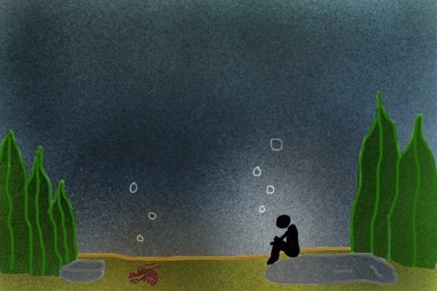
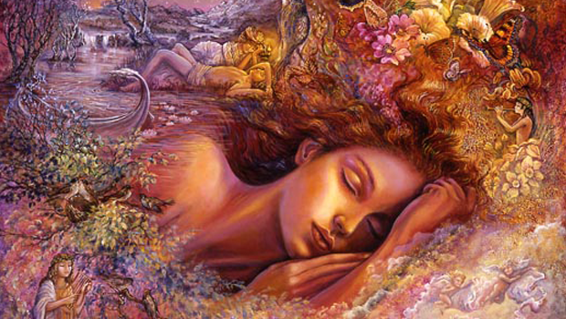
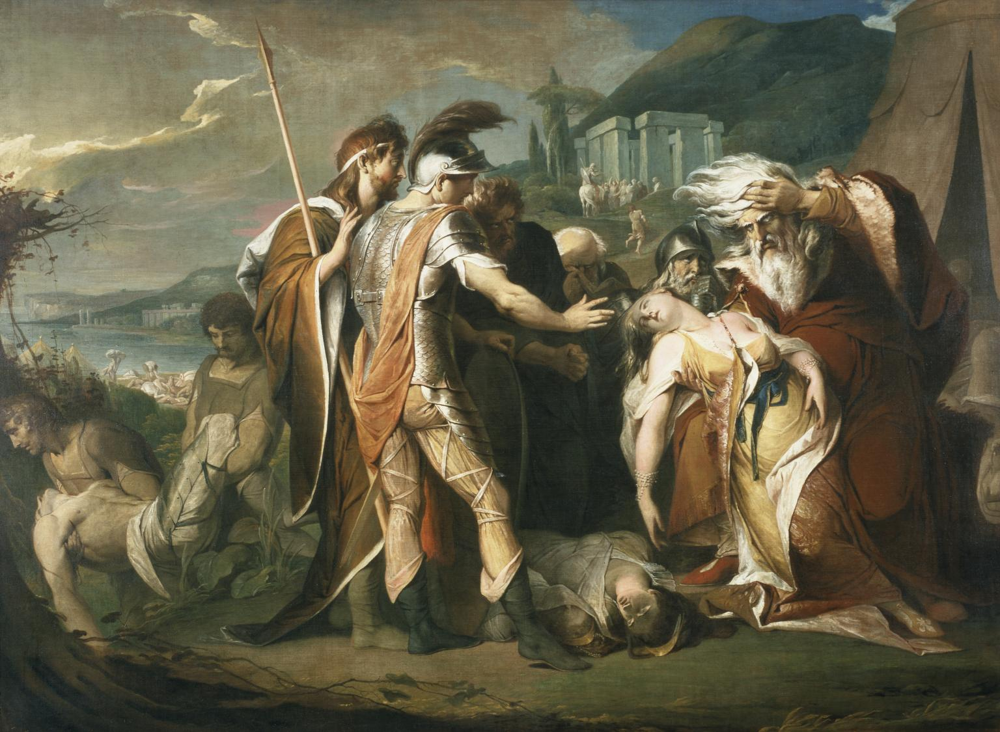
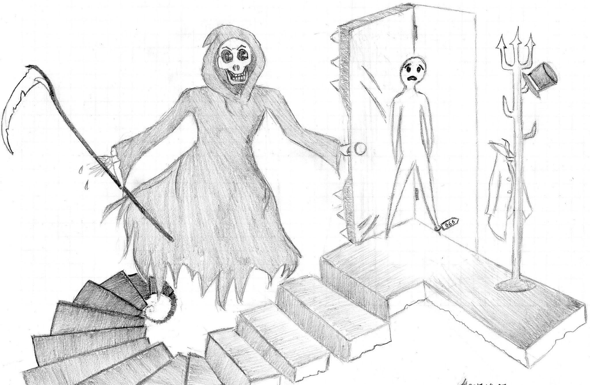

Line: I should have been a pair of ragged claws/Scuttling across the floors of silent seas.
(Original Art by Carrie Men)

This particular piece of artwork was chosen because it represents the self-deprecation of the speaker found in these
two lines. As shown, a figure sits at the bottom of the sea at the same level as sea creatures who “scuttle across
the floors”. The figure is looking down and pondering, while giving off the feeling of being inferior and hopeless.
In addition, the white circle around the figure contrasting the dark background colour demonstrates the solitude of
the figure, and how they keep to themselves much more often. The dark background itself represents the unknown
and darkness in the figure’s surroundings, meanwhile emphasizing the speaker’s feeling of regret and belittlement.
Line: And the afternoon, the evening, sleeps so peacefully!

The sleeping girl pictured above is a visual depiction of tranquil rest, with the flowers surrounding her to
denote a restfulness that is found in nature. The line in section 7: “And the Afternoon, the evening, sleeps
so peacefully!” personifies how times of the day pass by with ease, and seem unaffected by events, just as one
cannot be easily awaken from deep sleep. What J. Alfred Prufrock appears to be saying is that the simple things
in life (such as rest) derived from simply existing are not cherished, until they are taken away. There are many
thoughts and ideas (dreams) surrounding the sleeping girl which reflect a sense of tranquility of the inner mind,
and detachment from reality. The balance of colours and visual aspects induces a calming effect in the overall piece.
Line: But though I have wept and fasted, wept and prayed

In this picture shown, King Lear grieves over the death of his daughter Cordelia. In the play, Lear is shown to have
wept and mourned over her death, hoping to believe it isn’t true and praying that she may still be alive. In the poem,
the speaker is shown to have “wept and prayed” but then says that he is “no prophet–and here’s no great matter” as if
to imply the futility of his efforts spent on weeping and praying, saying they were unimportant. Similarly, King Lear’s
futile efforts in mourning over his dearest daughter’s death are in vain as it is impossible to bring her back to life.
Line: And I have seen the eternal Footman hold my coat, and snicker.
(Original Art by Helen Du)

The above sketch depicts the grim reaper opening the door to a seemingly never ending staircase to a soul who is
reluctant to enter. The soul is a representation of Prufrock himself, as he is fearful of the what is to come in
the future (the world beyond the door), because it is uncertain (just like how each step of the staircase is
darker as one descends). Prufrock’s fear, and the Eternal Footman’s snicker were illustrated on both faces of
the soul and Grim Reaper (respectively). In addition, the grim reaper represents the “eternal footman” that
Prufrock mentions. A footman’s job is to hold doors for people and take off their coats, which is why a coat
was drawn, housing a top hat and coat. However, because the grim reaper is an “eternal footman” the guests he
houses are meant to stay forever. This is indicated by the tag on the soul’s foot, as the dead are tagged,
showing that once the soul enters eternity, there is no return to a mortal state of being. As well, the coat
and hat on the rack belongs to a guest that has come before the soul, indicating that the previous guest has
not left the grim reaper’s dwelling. The coat rack is also embellished with a pitch fork’s end to symbolize
that the soul is about to enter eternity in a hellish place.
Background Image: "Pretty Free Background Pictures For Websites." No Zoku Image and Picture Background Site. N.p., n.d. Web. 06 Apr. 2017.